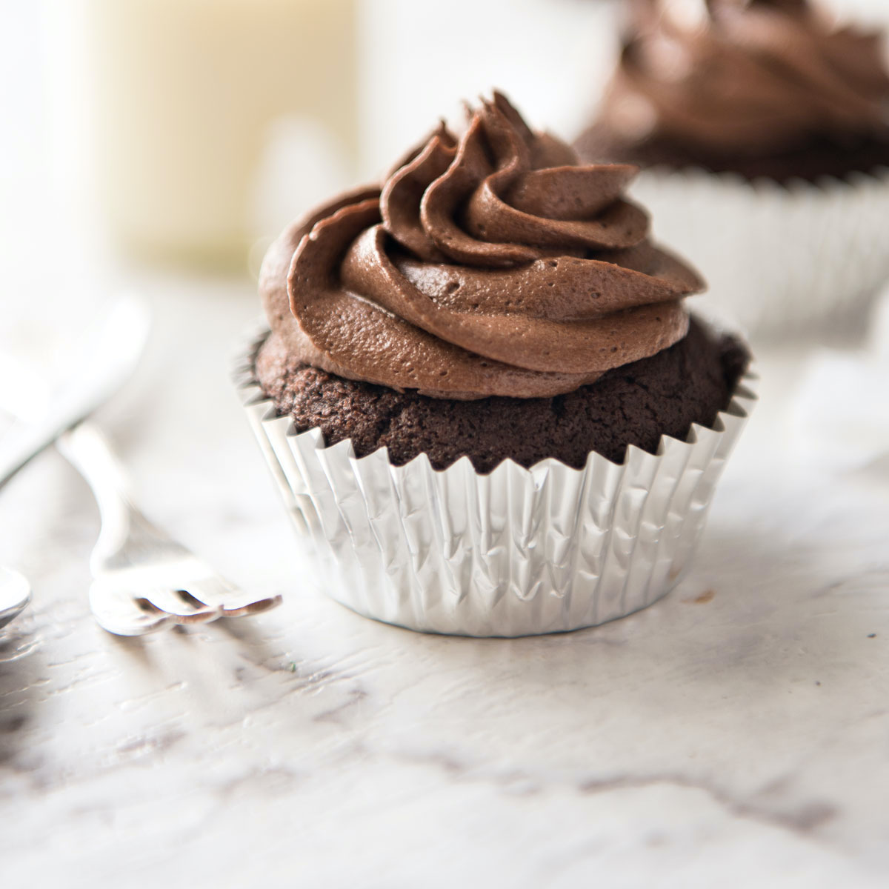

Chocolate Cupcake

A sweet chocolate cupcake to soothe your chocolate cravings
Chocolates are sweet, cupcakes are creamy, chocolate cupcakes gives you the best of both.
Here's how to make one yourself :).
Ingredients
- A cup of milk, granulated sugar, vegetable oil, all-purpose-floor and hot water
- 1 large egg
- 2 tsp baking soda and baking powder
- 1 tsp salt
- 1 tsp vanilla extract
- 1/2 cup cocoa powder
Instructions
- Preheat oven to 350F (175C) and line muffin tin with cupcake liners
- In large bowel, whisk together sugar, flour, cocoa powder, baking (soda and powder), and salt
- Stir in milk and vegetable oil, until combined
- Stir in egg and vanilla extract
- Add hot water and stir until mixture is evenly combined
- Fill prepared muffin tin cavities just 2/3 of the way full
- Bake muffin tin for 18-25 minutes
- Allow cupcakes to cool completely before frosting